visit
> online tours
Online tours
Narrated
by
Stephen Fry
, this tour takes you on three different trails
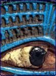
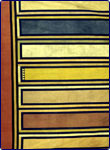
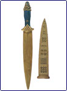
NEW!
A Kind of Magic
The African Galleries
Agatha Christie
and Archaeology
Animals in
The British Museum
Annuraaq: clothing
of Arctic North America
The British Museum's 250th Anniversary Medal
The British Museum Friends
The 'Caves of the
Thousand Buddhas'
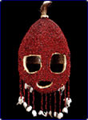
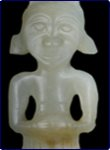
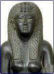
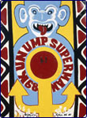
Changing Face:
Masks from
the British Museum
Chinese Jade
Cleopatra of Egypt:
from History to Myth
Collecting the
Modern World
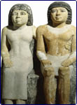
Collecting Souvenirs
in Japan: a Diary
Country Views
Durer and his legacy
Egypt in the
Old Kingdom
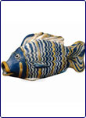
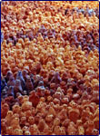
Eternal Egypt
Field for the
British Isles
Gladiators and Caesars
A tour of the
Great Court
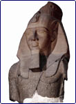
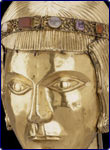
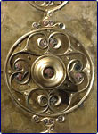
Highlights of The
British Museum
Human Image
Iron Age Britain
Kabuki Theatre of Japan
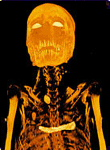
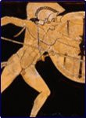
Kayak clothing in Greenland
100 Views of Mount
Fuji: a selection
Mummy: The Inside Story Tour
The Myth of the Trojan War
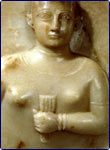
The Pacific: Gods and People
Queen of Sheba:
Treasures from
ancient Yemen
Rembrandt the Printmaker
Science and the Past
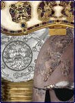
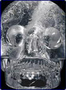
Our Top Ten British Treasures
Unidentified
Museum Objects
Unknown Amazon
Vietnam: Behind the Lines
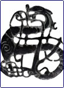
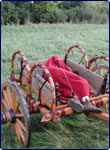
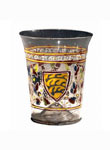
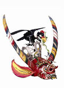
The Vikings
The Wetwang
Chariot Burial
The Art of Glass
Living and Dying (Wellcome Trust Gallery)
home
|
visit
|
what's on
|
join
|
shop
|
learning
|
COMPASS
|
world cultures
|
sitemap
|
contact us
|
copyright
© The British Museum, 2003